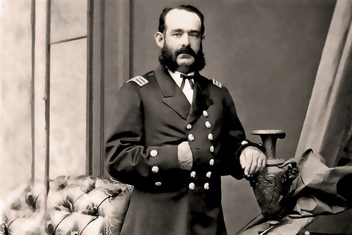

Miguel Grau Seminarrio
El Oficial Naval Peruano más renombrado y héroe de la Batalla Naval de Angamos durante la Guerra del Pacífico (1879-1884)

Retrato del Almirante Miguel Grau Seminarrio.
Línea de tiempo de la vida del Almirante Miguel Grau Seminarrio:
- 1834 - Nacido en Piura un 27 de Julio.
- 1854 - Ingresó a la Marina de Guerra del Perú como guardiamarina.
- 1856 - Con el grado de alférez de fragata, pasó a servir a bordo de la fragata Apurímac.
- 1857 - Se sumó a la revolución conservadora de Manuel Ignacio de Vivanco y participó en el ataque al Callao.
- 1858 - Grau fue expulsado de la Armada, por lo que debió volver a la marina mercante.
- 1863 - Grau presentó su solicitud de readmisión, y fue readmitido al servicio naval como teniente segundo.
- 1865 - Fue ascendido a capitán de fragata.
- 1866 - Acusado de insubordinación, fue confinado en la isla San Lorenzo, donde fue sometido a juicio, para finalmente ser declarado inocente.
- 1867 - Por tercera vez, regresó a la marina mercante, laborando para una compañía inglesa. Ese mismo año se casó con la dama limeña Dolores Cabero y Núñez, de cuya unión nacieron diez hijos.
- 1868 - Fue reincorporado al servicio naval como comandante del monitor Huáscar, siendo ascendido poco después al grado de capitán de navío.
- 1872 - Suscribió, junto con otros marinos, una proclama contra el golpe revolucionario de los hermanos Gutiérrez.
- 1873 - Al mando del Huáscar, realizó un crucero por el sur peruano y el litoral boliviano, al ocurrir la amenaza de un conflicto armado entre Chile y Bolivia por cuestiones territoriales.
- 1874 - Fue comandante de la Escuadra de Evoluciones, recorriendo el litoral peruano entre el Callao e Iquique.
- 1875 - Fue elegido diputado por la provincia de Paita, por el Partido Civil.
- 1879 - Estalla la Guerra del Pacífico, el 5 de abril de 1879, Grau retomó el mando del Huáscar.
- 1879 - Ganó el combate naval de Iquique del 21 de mayo de 1879, hundiendo a la corbeta Esmeralda y se ganó el respeto unánime por su acción humanitaria de rescatar a los náufragos chilenos.
- 1879 - El 8 de octubre de 1879, estando frente a Punta Angamos, el Huáscar fue cercado por dos divisiones enemigas, trabándose un desigual combate. Grau murió en los primeros minutos de la lucha, por efectos de una granada disparada por el acorazado Cochrane, que destrozó su cuerpo.
- 1890 - Sus restos, inicialmente enterrados en Santiago de Chile, fueron repatriados.
- 1946 - Fue ascendido póstumamente al grado de almirante. En su calidad de exdiputado, conserva una curul permanente en el Congreso de la República del Perú.
"La figura de nuestro ínclito Almirante, personifica una de las glorias legítimas que enaltecen no solo nuestros anales y los de América, sino del mundo entero. Su vida y sacrificio son paradigmas de caballerosidad y abnegación.
-- Expresidente del Perú Manuel Prado Ugarteche."